I have a habit of going deeper than the design brief. I like the edge cases, the legal constraints, the dev conversations, and the strategic decisions that make good designs ship.
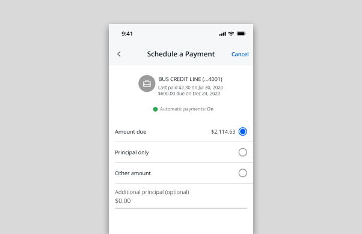
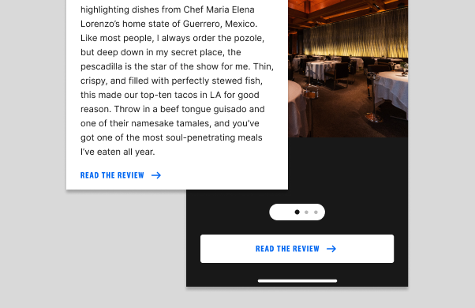
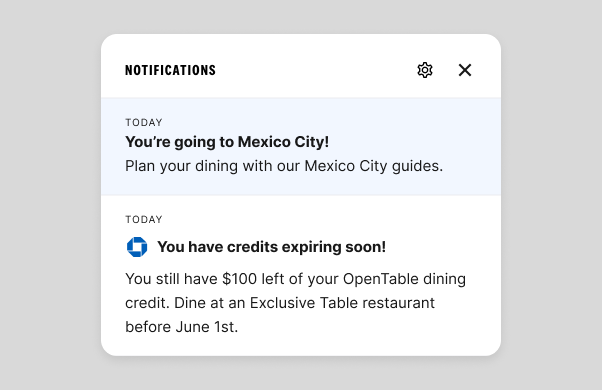
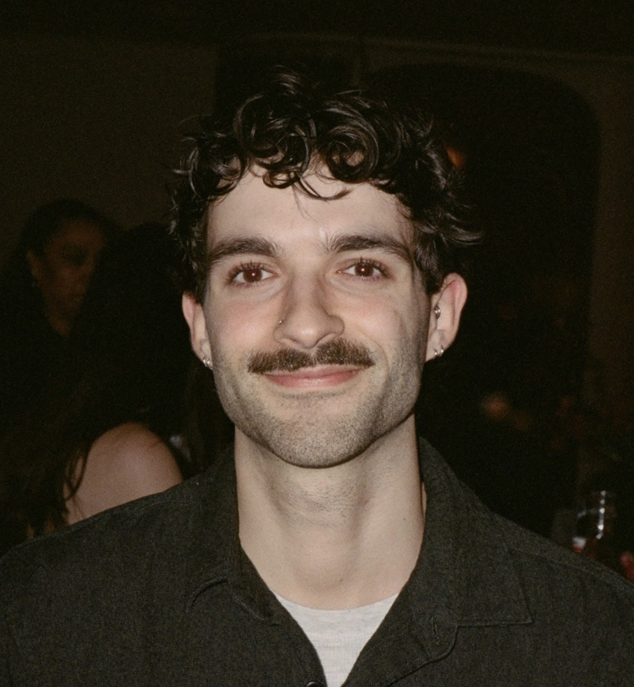
I'm a product designer based in Brooklyn, originally from Columbus, Ohio.
In college, I was deciding between studying psychology to help people and studying design to create visually compelling graphics. I realized I didn't have to choose, so I double majored in both at Ohio University. When I discovered UX, I approached a professor with experience in the field and proposed an independent study. That decision changed the direction of my career.
What stuck with me from psychology is the part that makes me a better designer: genuine curiosity about how people think, what they need, and where systems fail them. I care about creating work that actually helps people, not just work that looks good.
I've spent my career designing for high-stakes financial products at JPMorganChase and consumer experiences at The Infatuation. I make a point of being active in LGBTQ resource groups - these are spaces I believe in and show up for.
Pay Business Lending is the mobile payment experience for Chase business lending products, used by small business owners to manage and submit payments on credit lines and loans directly from the Chase mobile app.
This project was initiated by the business to address a persistent customer experience problem. The root cause: an "additional interest" payment type that was consistently misunderstood. Customers who intended to pay toward their principal were selecting additional interest instead -a costly mistake in a high-stakes financial context that the business needed to resolve. The business decision was clear: remove it. My job was to figure out what that meant for the experience.
I was the sole product designer on mobile for this initiative, owning the end-to-end design process, from auditing the existing flow and identifying opportunities, to working directly with developers on feasibility, partnering with a content designer on payment type naming and error states, and presenting design options to product stakeholders for sign-off.
A separate designer owned the web and desktop experience. Our platforms had distinct requirements, constraints, and development teams, so we worked independently while staying aligned on direction.
The payment selection screen for Pay Business Lending offered eleven distinct payment combinations. For most business lending customers, this level of granularity created more confusion than clarity.
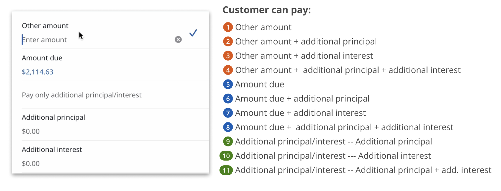
Payment selection screen: 11 combinations available to the customer
The additional interest payment type was the primary offender. Paying toward additional interest and paying toward additional principal are functionally similar actions, but they produce very different outcomes. Customers were routinely selecting the wrong option - a costly mistake in a high-stakes financial context where payment errors on business accounts carry real consequences.
Removing additional interest was the right call. But removing a payment type from a complex financial flow is not a simple deletion. It required understanding every state the payment selection screen could be in, every user who might be affected, and every downstream implication for content, accessibility, and consistency across the payment experience.
Business lending customers need clear, unambiguous payment options so they can make informed decisions without risk of error in a high-stakes financial context.
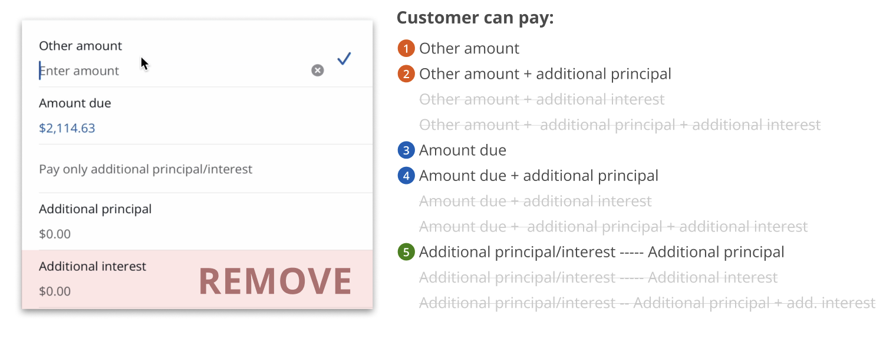
Payment options after removing additional interest, from 11 to 5
Before exploring solutions, I needed to fully understand the scope of what I was working with. The existing payment selection screen used a quick select component to display all eleven payment options, some of which contained input fields for custom amounts. This is where I identified an accessibility failure that went beyond the product ask.
Quick select is a component pattern that assumes a single tap completes the interaction. When applied to an option containing an input field, it breaks down entirely. Screen readers and tab navigation cannot properly engage with an input field treated as a quick select item, making the experience inaccessible for users relying on assistive technology. This was an accessibility gap. Removing additional interest gave me the opportunity to address it.
I brought this finding to our accessibility specialists, who confirmed the issue and provided guidance on the appropriate component pattern. Radio buttons, which are designed to work with input fields and are fully compatible with screen readers and keyboard navigation, became the foundation for the redesigned screen.
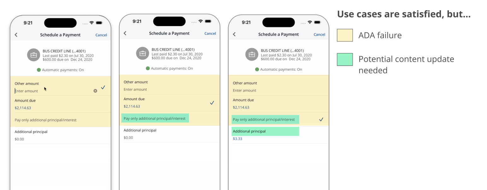
Accessibility gap (yellow) and content update needs (green) identified during the audit
Rather than designing to a single solution, I developed three options at different levels of scope and brought them to product and technology stakeholders with rough t-shirt sizing for engineering effort.
The first was our target state: a consolidated flow that combined the payment summary and pay-from screens into a single screen, and added a payment verification screen for consistency with other Chase payment flows. This was the most ambitious option and carried the largest engineering lift.
The second was a middle ground: the same screen consolidation, but replacing the verification screen with an updated action sheet that displayed payment totals. Smaller lift, but still a meaningful improvement to the overall flow.
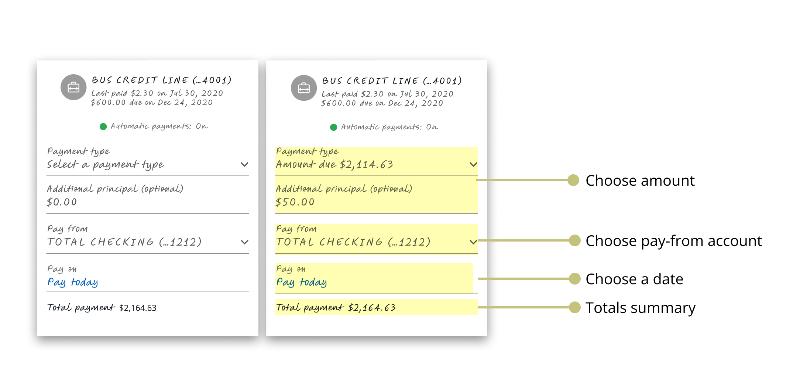
Option 1: payment type, pay-from account, and date consolidated onto a single screen
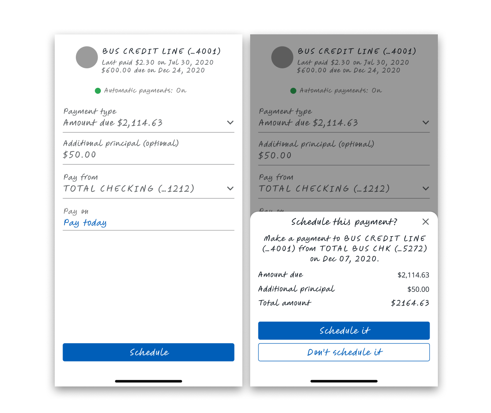
Option 2: screen consolidation with an action sheet displaying payment totals in place of a verification screen
I presented these two first. When it became clear that capacity constraints made both difficult to prioritize, I introduced a third option: swap the quick select component for radio buttons and remove additional interest. Product selected this option. The target state was documented and left available for future exploration.
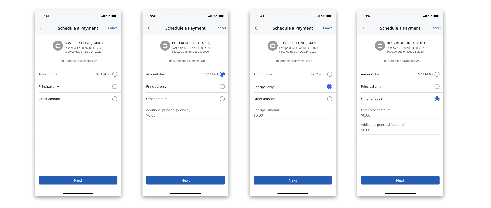
Final design: radio buttons replacing the quick select component; the selected direction
I ran my own feasibility calls with the mobile development team throughout the process. Understanding what could and could not be built on the platform shaped how I scoped each option and how I communicated tradeoffs to product. I also conducted visual QA in collaboration with developers to ensure the implemented experience matched the design intent.
I identified the full range of edge cases the redesigned screen needed to account for: error states, zero balance states, and the specific scenario where a customer attempts to edit a previously scheduled payment that included additional interest. Each required distinct content and interaction decisions. I looped in our content designer as needed throughout this process.
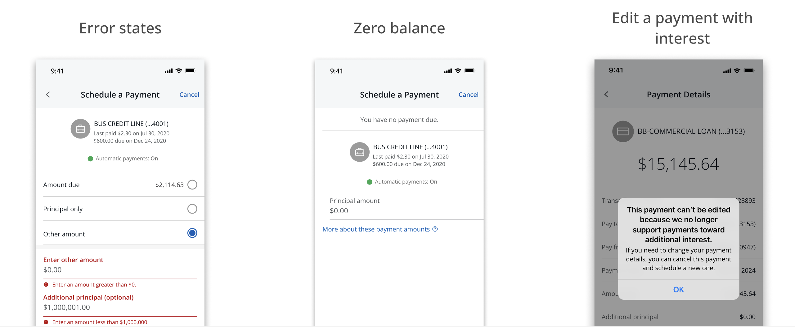
Edge case coverage: error states, zero balance, and editing a legacy scheduled payment
The redesigned payment selection screen shipped with additional interest removed and radio buttons in place of the previous quick select pattern, resolving the accessibility gap identified during the audit.
The removal of the additional interest payment type reduced the source of confusion that was driving reversal requests. The target state, representing a more significant consolidation of the payment flow, was documented and remains available for the team to revisit when capacity allows.
The Infatuation is a restaurant discovery platform and editorial brand, operating as a subsidiary of JPMorganChase. Despite that relationship, the connection between the two brands was underleveraged. Chase users with dining benefits had little visibility into how The Infatuation could help them act on those benefits, and The Infatuation had no scalable way to communicate that value to its users.
My product manager and I identified this as a meaningful gap. A notifications system could serve as the connective tissue, giving The Infatuation a direct channel to reach users with relevant content, feature announcements, events, and Chase benefit information, while strengthening the perceived relationship between the two brands. For Chase users in particular, surfacing dining benefits within The Infatuation could drive benefit utilization and deepen engagement with both platforms.
This project established notifications as a net-new capability within The Infatuation's digital experience, across mobile app, mobile web, and desktop web. It included the design of the notification entry point and container, the enrollment and opt-in model, and a redesigned communications settings experience. The work also required navigating legal constraints tied to Chase's notification policies and coordinating across multiple internal teams.
I was the sole product designer on this initiative, working alongside a product manager. My responsibilities extended beyond UI design. I contributed to the strategic framing of the feature, helped define the notification category structure, drafted copy for key states of the experience, and designed the legal enrollment model that shaped how users are onboarded into notifications. I collaborated with engineering, editorial, legal, and Chase partners throughout the process.
The Infatuation had no native way to communicate with its users at scale. Feature launches, editorial content, events, and Chase benefit information were siloed across external channels like email and social media, with no guarantee of reaching users within the product itself. New features were being introduced through one-off onboarding modals, a pattern that was neither scalable nor effective for building long-term user awareness.
For Chase users specifically, The Infatuation already offered a Chase Benefits Hub, giving eligible users a dedicated space to explore their dining benefits. However, there was no mechanism to actively surface those benefits or prompt users to engage with them from within the product. The infrastructure existed, but there was no way to connect users to it in a timely or contextual way.
Beyond the business gap, there was a user experience gap. Settings across The Infatuation were fragmented, touched by multiple teams, and not consolidated in any meaningful way. Any new notification preference controls would need a home, and the existing settings experience was not equipped to provide one.
The Infatuation needed a scalable, legally compliant way to reach users within the product, surface Chase dining benefits to eligible users, and give users meaningful control over the communications they receive.
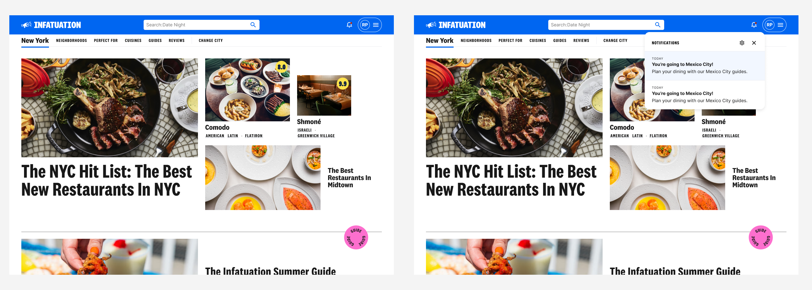
Notifications across mobile app, mobile web, and desktop web
Early in the project, my product manager and I worked to define what kinds of notifications The Infatuation would actually send. We landed on four categories: product announcements, editorial content, experiential notifications for events like EEEEEATSCON, and Chase-related benefits for linked users. I advocated specifically for the product announcements category, which had no prior equivalent in the experience. Without a dedicated channel for feature announcements, the platform had been relying on one-off modals to introduce new functionality. A persistent, categorized notifications system offered a more scalable alternative and the potential to increase utilization of new features over time.
I designed the notifications entry point as a bell icon living in the primary navigation, consistent across mobile app, mobile web, and desktop web. When tapped, a scrollable popover appears displaying the user's notifications, each of which links to a relevant destination within the product. An unread indicator appears on the bell when new notifications are present.
During a design review with stakeholders, I received feedback that the web experience should not include a full hub screen and should rely solely on the flyout treatment. While I believed a hub screen would offer better scalability and skimmability as the feature grows, I understood the importance of stakeholder alignment and removed it from V1, keeping the decision documented for future consideration.
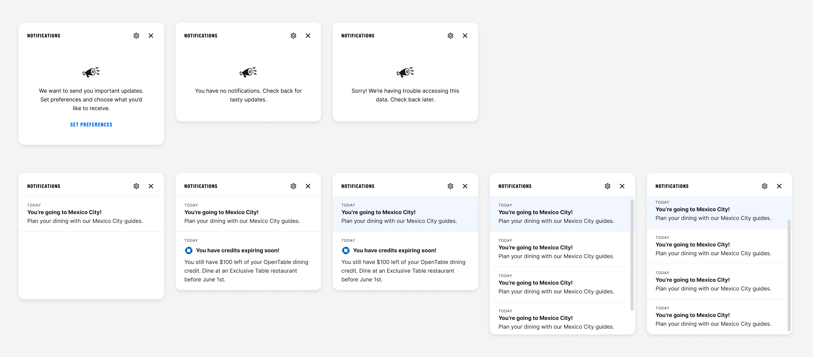
Popover states: empty, unread notifications, and read notifications
As I began drafting notification copy and sharing it with legal, two significant constraints surfaced. Legal review surfaced constraints around how Chase-linked users could be enrolled in certain notification categories, and separately, that all notification content would need to pass through an internal content approval process.
The enrollment constraint had real engineering implications. If we had designed an enrollment model that required pulling external data to check user opt-out status, it would have added significant scope to the engineering effort and required coordination with additional teams. Instead, I designed an enrollment model that automatically enrolls users in all notification categories except Chase-related benefits, which requires explicit opt-in through settings. Users are informed of this through the product announcements category, keeping the implementation within The Infatuation's own infrastructure.
Settings within The Infatuation had been touched by multiple teams over time and were not consolidated into a coherent experience. Rather than layering notification preferences on top of an already fragmented structure, I used this project as an opportunity to redesign communications settings holistically. I aligned with the teams that had previously contributed to settings, received buy-in for the changes, and created a consolidated experience with real estate for notification preferences. For users who were not linked to Chase, I designed a CTA within settings to encourage them to link their account directly, so they could access the full benefit notifications feature.
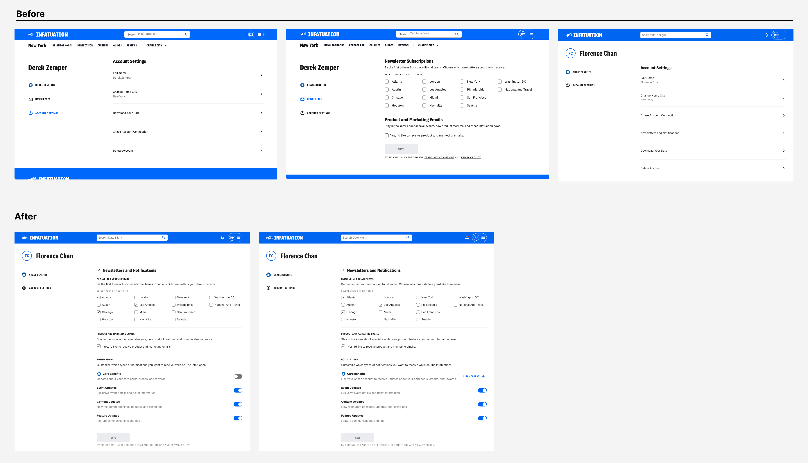
Communications settings: before and after the redesign
In the absence of a content designer dedicated to this work, I took on the responsibility of drafting copy for the various states of the notifications experience, including empty states, notifications-not-enabled states, and mock notification copy across all four categories. To support this work, I built a content design helper agent through an internal LLM tool, which allowed me to pressure test my copy, think through alternative approaches, and move more efficiently without sacrificing quality. I worked with our editorial partners to review and approve the copy in working sessions, and I flagged the content approval requirement to relevant stakeholders so that all parties contributing notification content in the future would be aware of the process.
Notifications is currently in development. Because the feature has not yet launched, quantitative performance data is not yet available. The decisions made throughout the design process were oriented toward outcomes that will be measurable post-launch, including feature utilization rates, Chase benefit engagement among linked users, and notification opt-in rates by category.
Several decisions made during the process had immediate, tangible impact regardless of launch. The enrollment model I designed avoided a significant engineering scoping problem by keeping notification logic within The Infatuation's own infrastructure, removing the need to coordinate with additional Chase teams or pull external data. The communications settings redesign consolidated a fragmented experience that had accumulated across multiple teams, resulting in a cleaner foundation for future preference management. Early legal collaboration surfaced a content approval requirement that gave the broader team clarity on how notifications would be written and reviewed going forward.
The feature represents a net-new capability for The Infatuation and a foundation that can scale as the relationship between the platform and Chase continues to develop.
The Infatuation's mobile app had a problem: adoption was significantly lower than mobile web, and we suspected navigation was a core reason. Features were buried, flows were nested, and the structure didn't match how users actually thought about finding a restaurant.
EEEEEATSCON is The Infatuation's annual food festival, built in the spirit of a music festival but with restaurants as the headliners. It gave us direct access to a concentrated audience of engaged food people, which made it an ideal place to run live comparative research.
I led this project end to end, from prototyping through research planning, facilitation, and synthesis. I walked the plan through the full product and design team before going to field, and ran sessions alongside a product manager at EEEEEATSCON.
Low app adoption relative to mobile web pointed to friction in the core experience. Our hypothesis: the navigation structure was preventing users from completing their primary jobs to be done. We needed to test that assumption against real behavior.
The navigation structure was preventing users from completing their primary jobs to be done. We needed to test that assumption against real behavior.
I vibecoded a functional prototype using Claude and GitHub Copilot in VS Code, grounded in UX heuristics and assumptions about what the navigation should prioritize. A developer loaded it on device so we could run a true side-by-side comparison against the production build.
We took the research to EEEEEATSCON, intercepting attendees over two days and offering a free meal token in exchange for 10 minutes. 16 participants completed two-part sessions: first, a conversation about how they find restaurants and what platforms they use; then a task where they were asked to find a restaurant in a new city using either the prototype or production. Sessions were screen-recorded and audio was captured and summarized using Granola.
Users responded positively to bottom navigation and wanted clearer separation between features. Benefits information didn't belong in primary navigation. The key tradeoff: moving the map off the opening screen reduced discoverability, even though it cleaned up the initial experience. Given that map and search were users' primary jobs to be done, that tension will need to be resolved in the final design direction.
Research synthesis is currently in progress. This case study will be updated with final outcomes once the work is complete.
The Infatuation's editorial team was planning a travel marketing push and wanted the Travel Hub to match the moment. The hub is the entry point for users planning trips, surfacing city guides and destination content across the site, but the existing page undersold the breadth of cities we cover and the linked See All Cities page gave users little to explore. I redesigned both surfaces across web, mobile web, and app to lead with imagery and make the city catalog feel expansive: a visual grid on the hub and a filterable See All Cities page.
While working through the travel experience, I identified a separate problem worth solving. The Infatuation is a city-specific product -your content experience is tied to whatever city you're set to. A user could technically switch cities by clicking into a venue review from the "Outside of [city]" section in search results, but they'd land on the review itself, not the city section front. The only deliberate path to change your city was in the navigation, which was buried in the app. Search is where users with intent go first, and it had no way to meet that intent directly.
Sole designer. The travel hub and city grid work was in my original scope. I identified the search gap independently, made the case for including it, and it was added.
Users searching for a city they don't live in had no clear way to act on that intent. Typing "Austin" into search would show Austin content in an "Outside of New York" section, but there was no path to shift your experience to Austin from there. The workaround required either hunting through the nav or stumbling into the right search result and landing somewhere unexpected.
Users with out-of-city intent had no deliberate path to act on it from search - the most natural place on the product to express that intent.
The travel redesign itself was relatively straightforward: audit the existing hub, identify what was underselling the catalog, design a city grid with photography that communicated scale, and build a filterable See All Cities page to make exploration feel less like a list and more like a browse.
The search work required more cross-functional coordination. I worked with engineering to define the triggering logic: the CTA surfaces when a user has typed at least three letters matching a city we write about, accounting for abbreviations so that "NYC" and "New York" both work.
We also had to handle a specific layout edge case. The "Outside of [city]" section, where the CTA lives, can collapse when there are enough local results. A user typing an exact city name could easily miss it. I added a second placement directly beneath the search bar that triggers on an exact match, so the prompt is visible when the intent is clearest.
Both the travel redesign and the search city-switching work are built and waiting on the next release. The search work adds a deliberate action path for a behavior the product previously had no answer for. Users with out-of-city intent can now act on it from the most natural place on the site.
The Starter segment is Chase's dedicated experience for customers aged 18 to 24, focused on driving growth and deepening their relationship with the bank. The cross-product strategy team identified an opportunity to help the Starters team create experiences that would encourage account deepening, getting young customers to engage more broadly with Chase's suite of products and services, with the goal of building long-term loyalty.
I was brought in alongside another designer to collaborate with the Starters team on concept development and research synthesis. We worked in tandem throughout, bouncing ideas off each other and building on each other's thinking.
We began by immersing ourselves in existing research and competitive analysis, reviewing how other financial institutions and fintech products approached savings behavior. From there, we facilitated a Crazy 8's workshop with product and design stakeholders, generating 50 ideas in 20 minutes across themes like gamification, rewards, goal visualization, and social accountability. The workshop surfaced two strategic directions worth pursuing: rewards and benefits, and monitoring and communications.
Working collaboratively, we developed six concepts across those two themes, each designed to encourage healthier saving habits among young, paycheck-to-paycheck customers. We then partnered with a researcher to test thirteen concepts with real Starter users through an unmoderated usability study, synthesizing the findings and shaping the story for our handoff. Our final deliverable was a set of concepts ready for further ideation and development, along with a clear recommendation for where the team should focus next.
The work delivered a validated foundation for the Starters team to build from. Designing within the constraints of a large banking organization required careful consideration of technical feasibility, privacy implications of surfacing financial data, and the behavioral realities of a segment with limited financial flexibility. The team is currently developing features informed by this work, reflecting the value of the concepts we delivered.
The Infatuation is an editorial platform built around restaurant recommendations. Its two core editorial products are guides, which group restaurants by theme or neighborhood, and reviews, which give readers a detailed take on a specific restaurant. Both are central to the experience, but users browsing guides weren't converting to reviews at the rate the business expected.
The opportunity was clear: reduce the friction between a guide and the review behind each restaurant listed in it. I designed two CTA treatments to create that path more explicitly, tested them against control in an A/B experiment, and shipped the winning variant.
I was the sole product designer on this project, working with a PM and a development team. I owned the design process end to end, from early exploration through critique and iteration to final specs. The project ran for roughly two months.
Users browsing guide pages had no direct path to the review for a given restaurant. The only way to get there was to tap the venue title, which wasn't clearly interactive; the hover state indicating it was a link was only visible on desktop. As a result, users who might have continued deeper into the product weren't doing so.
The guide page also featured a lightbox, an expanded image treatment that users could open from any restaurant listing. The lightbox had an existing CTA pointing to the review, but it wasn't prominent enough to drive meaningful engagement.
The gap wasn't a content problem. The reviews existed. Users just weren't finding a clear route to them.
Guide pages needed a more explicit path to reviews, surfaced at the moments users were most likely to want one.
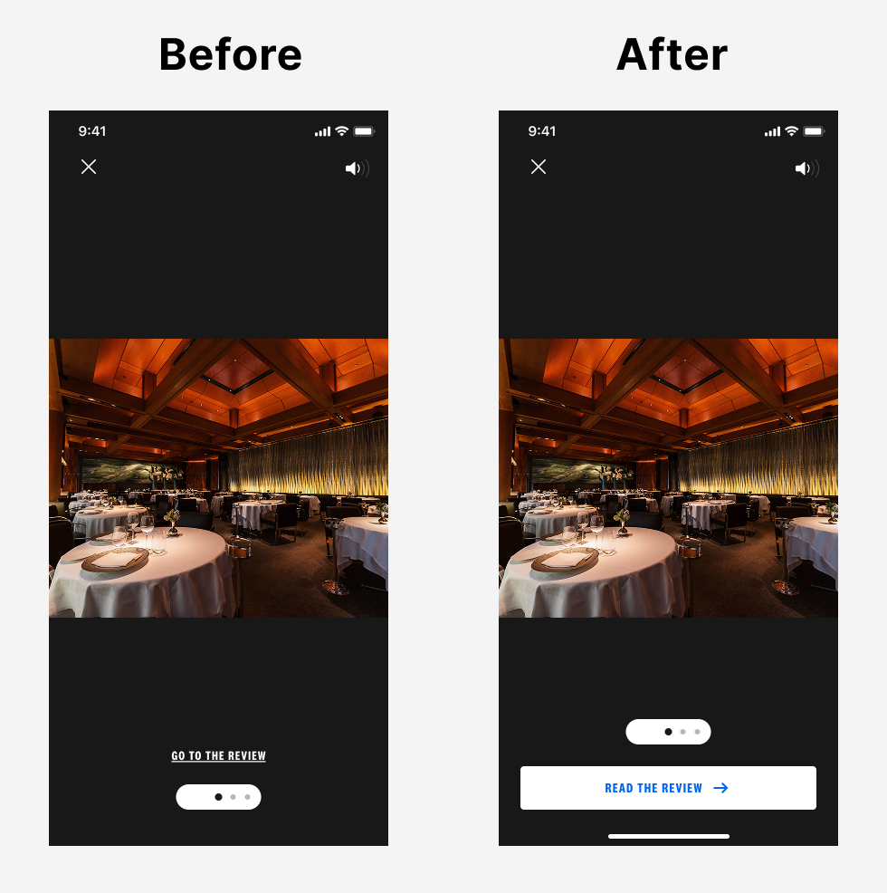
App lightbox: before and after the improved CTA treatment
The initial brief was focused on improving the lightbox CTA, which existed but wasn't driving meaningful engagement. As I dug into the guide page experience, I identified a broader opportunity: the caption area on each restaurant listing had no CTA at all. Users had no explicit prompt to go read the review from the most prominent part of the guide page. Adding one became a natural extension of the work.
I worked through multiple iterations of both treatments and brought them to group critiques with other designers before landing on a direction. Critique pushed me to sharpen the hierarchy of the caption CTA and reconsider how the lightbox CTA was weighted relative to the rest of the lightbox content.
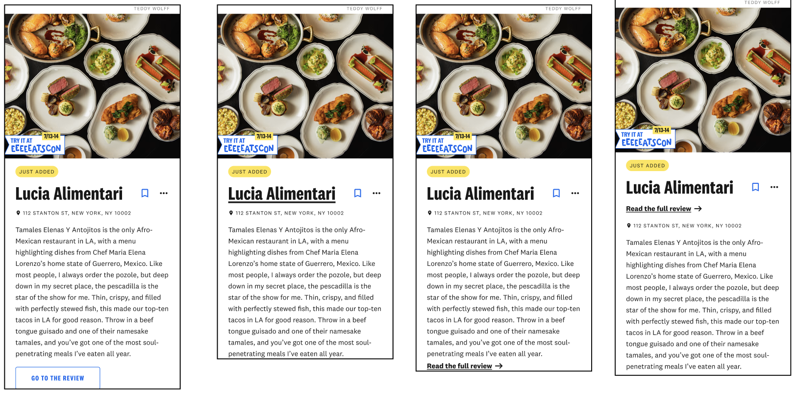
Caption CTA iterations: refining hierarchy and label through critique
The experiment was structured around two variants. Variant A combined a new caption CTA on the guide page with an improved lightbox CTA. Variant B added a third touchpoint: a full-screen CTA at the end of the image carousel in the lightbox.
Both were tested against control in an A/B experiment across the mobile app, mobile web, and desktop web.
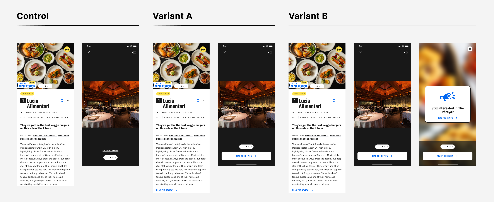
A/B experiment: Control, Variant A (caption + lightbox CTA), and Variant B (+ full-screen carousel CTA)
The experiment results showed Variant B performing slightly ahead of Variant A, but the difference was marginal and not strong enough to justify the added complexity. The more important consideration was that the final full-screen lightbox CTA carried real risk. A user reaching the end of a carousel reasonably expects another image, not a CTA screen. Presenting one there felt like it could erode trust rather than build it.
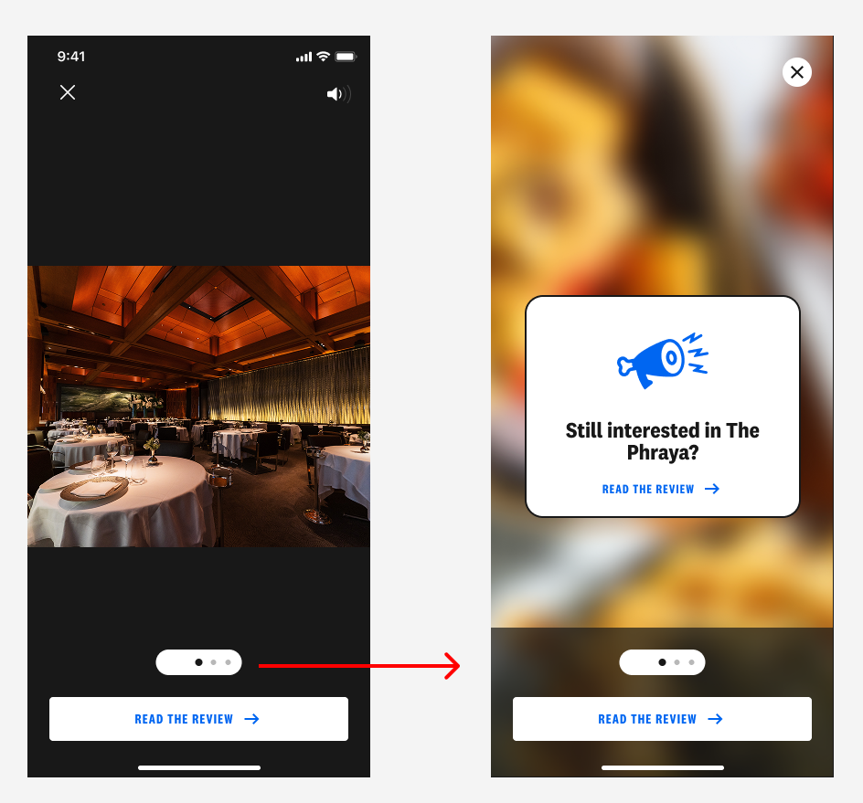
Variant B's full-screen carousel CTA in the app, an interaction pattern users don't expect at the end of an image carousel
Combined with the added development complexity Variant B required, the case for shipping Variant A was clear. It delivered nearly identical lift with less implementation cost and without the interaction pattern we weren't confident in.
Variant A shipped across the mobile app, mobile web, and desktop web. Guide-to-review conversion rate increased by 26%, and the "Read the Review" click rate increased by 112%, driven primarily by the new caption CTA. Venue title click rate dropped 15%, which was expected: users now had a more explicit path to the review, making the title itself a less necessary tap.
Retention at seven days was unchanged, confirming that the new CTAs weren't creating a pattern users bounced from.